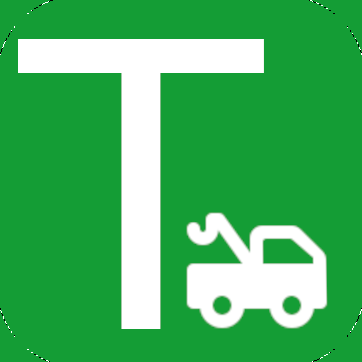
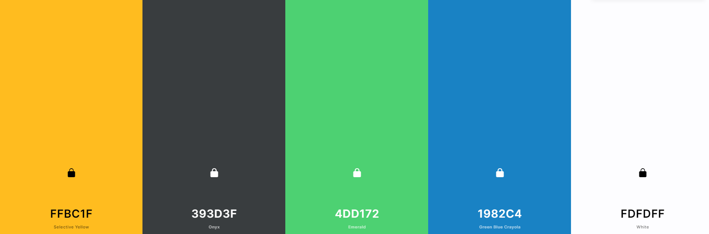

Site Name:
textatow.comPurpose and Goals:
A Story: You’re driving home from work one day and your car breaks down. You’re stuck on the side of the road. You now must do one of two things. One, Call your insurance and explain your situation then wait an hour or more, for a tow company to hopefully show up, with little to no communication from them. Or Two, search google maps for nearby tow companies and call around yourself. Best case scenario: You only wait an hour or two either way and the tow company is nice and takes care of you and your vehicle. Worst case scenario: You wait many hours or leave your vehicle there overnight risking a ticket before a tow company is finally able to get the job done. A New Story: You’re driving home from work one day and your car breaks down. You’re stuck on the side of the road. You visit a website and enter your vehicle details, location and destination info into a form and submit it. Immediately, Via text you’re communicated with to confirm your info and inform you which tow company accepted your request. That tow company shows up within the hour and you and your vehicle make it home before dinner.Target Audience:
Ages 18 and above. Ages 80 and below. Those who need accessability for websites are not the primary audience considering those individuals (hopefully) are not stuck on the side of the road when driving.Logo:
Color Scheme:
Typography:
MonoSite Scheme:
In progress